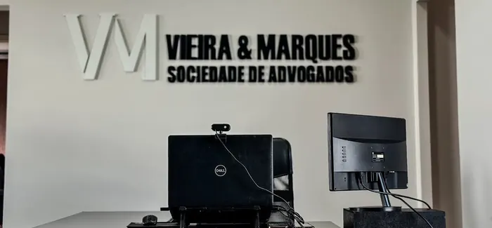

Como podemos ajudar a receber o que é seu por direito
Atuamos nos pontos em que a rescisão costuma vir incompleta.
Cálculo e cobrança de verbas rescisórias
Conferência completa do TRCT para identificar saldo de salário, aviso prévio, férias e 13º pagos a menor ou não pagos.
FGTS não depositado ou multa de 40% não paga
Levantamento dos depósitos do FGTS e cobrança da multa de 40% em demissões sem justa causa.
Horas extras e verbas não pagas
Identificação de horas extras, adicional noturno e outras verbas habituais que deveriam integrar o cálculo da rescisão.
Rescisão indireta por falta grave do empregador
Quando o empregador comete falta grave, é possível pedir a rescisão indireta com todos os direitos de uma demissão sem justa causa.
Reversão de justa causa aplicada indevidamente
Contestação de demissões por justa causa aplicadas sem motivo real, para garantir o recebimento das verbas devidas.
Não sabe se recebeu tudo que tinha direito?
Quero uma análise gratuitaDr. Oscar Vieira — defesa especializada em Direito do Trabalho
Com anos de experiência na área trabalhista e foco implacável na defesa do trabalhador, nosso escritório é liderado por profissionais altamente qualificados na cobrança de verbas rescisórias. Entendemos a angústia de ser demitido e descobrir que não recebeu tudo que tinha direito. Por isso, unimos conhecimento técnico em cálculos trabalhistas e estratégias jurídicas embasadas para garantir o recebimento integral da sua rescisão.
Estrutura real, equipe que você pode visitar
Endereço físico em Boituva/SP, com atendimento presencial ou por reunião online para as demais cidades do estado.
O que dizem nossos clientes
Relatos de quem já cobrou verbas rescisórias que a empresa deixou de pagar.
O que toda rescisão incompleta tem em comum
Atendimento em todo o Brasil
Escritório físico em Boituva/SP, com atendimento online para clientes de qualquer estado. Reclamações trabalhistas podem ser conduzidas remotamente do início ao fim.

Perguntas que quase todo cliente faz
O essencial sobre verbas rescisórias — sem juridiquês.
Como saber se recebi todas as verbas da minha rescisão?+
Compare o Termo de Rescisão (TRCT) com seus contracheques e o extrato do FGTS. Diferenças no saldo de salário, férias, 13º, aviso prévio ou nos depósitos do FGTS são sinais de que a rescisão pode estar incompleta e pode ser cobrada judicialmente.
Já assinei o TRCT. Ainda posso cobrar verbas em atraso?+
Sim. Assinar o termo de rescisão não impede a cobrança judicial de verbas pagas a menor ou não pagas. O prazo é de até dois anos após o fim do contrato, alcançando os últimos cinco anos trabalhados. Cada caso é avaliado individualmente.
O que é rescisão indireta?+
É quando o próprio trabalhador pede o fim do contrato por causa de uma falta grave do empregador, como atraso salarial repetido ou assédio. Quando reconhecida, dá direito às mesmas verbas de uma demissão sem justa causa.
Quanto tempo leva uma reclamação trabalhista?+
O tempo varia de acordo com a complexidade do caso e o andamento processual na Justiça do Trabalho. Sempre buscamos posicionar bem o processo desde o início para reduzir o tempo até a decisão.
Ainda com dúvida sobre sua rescisão? Conte o que está acontecendo em uma mensagem.
Falar com o escritório


.jpg)